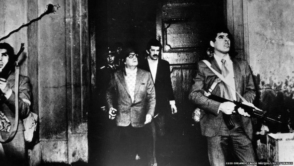
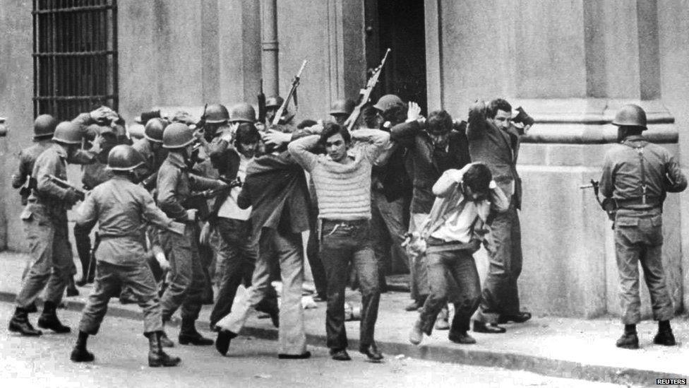
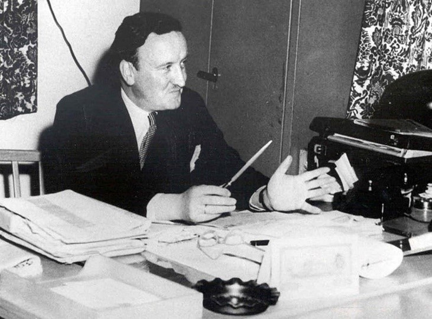
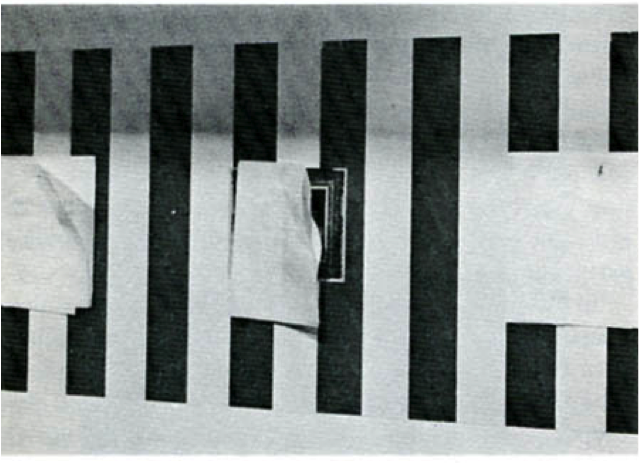

‘‘
„ჩემს ქვეყანას კლანჭებით არიან ჩაფრენილები და პოლიტიკური ცხოვრების მართვას ცდილობენ”
’’
ჰააკეს ინსტალაცია წარმოადგენდა შვიდ საშუალო ზომის (50-61სმ) შავ-თეთრ ჩარჩოში ჩასმულ პანელს, რომლებზეც კონკრეტული ინფორმაცია კომენტარების გარეშე იყო წარმოდგენილი. განმაიარაღებლად პრეზენტირებული ეს ინსტალაცია მარტივად აჩვენებდა გუგენჰაიმის მმართველი საბჭოს უშუალო კავშირს არცთუ ისე სახარბიელო რეპუტაციის მქონე ტრანსნაციონალურ კორპორაციებთან. საინტერესოა, რომ ჰააკემ პანელების ვიზუალი იმ ფორმით (შრიფტი და სხვ.) ააგო, რომელსაც გუგენჰაიმის მუზეუმში ოფიციალური განცხადებების და კომუნიკეებისთვის იყენებდნენ. ბორდის ცამეტი წევრიდან რვა ტრანსნაციონალური კორპორაციის ბორდის წევრი იყო. ბევრს დაებადება კითხვა: რა იყო ამაში სკანდალური?
Solomon R. Guggenheim Museum Board of Trustees: Exhibition, Stefanotty Gallery, New York City, March 12-April 13, 1974
სოლომონ რ. გუგენჰაიმის მუზეუმის სამეურვეო საბჭო: გამოფენა, სტეფანოტის გალერეა, ნიუ-იორკი, 1974 წლის 12 მარტი-13 აპრილი.
დავიწყოთ იმით, ვერსია, რომ ჰააკეს ამ ნამუშევრის შექმნისას შურისძიება ამოძრავებდა (1971 წლის გამოფენის ჩაშლის გამო), რბილად რომ ვთქვათ, რეალობას არ შეესაბამება. არტისტის მოტივაცია გაცილებით მნიშვნელოვანმა გარემოებებმა განაპირობა.1973 წლის 11 სექტემბერს ჩილეში მოხდა სამხედრო გადატრიალება დემოკრატიული გზით არჩეული სოციალისტი პრეზიდენტის, სალვადორ ალიენდეს დამხობის შემდეგ ხელისუფლების სათავეში გენერალი ავგუსტო პინოჩეტი მოვიდა. ამ სისხლიანმა მოვლენებმა
The military coup in Chile, BBC Photo/სამხედრო გადატრიალება ჩილეში, BBC ფოტო
უოტერგეიტის სკანდალამდე და პრეზიდენტ ნიქსონის გადადგომამდე საზოგადოებაში უკვე გავრცელდა ხმა პრეზიდენტის ადმინისტრაციასა და ჩილეს ულტრამემარჯვენე ორგანიზაცია Patria y Libertad-ს შორის შესაძლო კავშირებსა და ჩილეში მომხდარ გადატრიალებაში ცენტრალური სადაზვერვო სააგენტოს (CIA) კვალზე. ჰააკემ მოვლენებს დაასწრო. გამოფენა 1974 წლის აპრილში გაიხსნა. შესაბამისად, ამ დროისთვის ჰააკეს გამოძიება დასრულებული იყო.
ამ ინფორმაციას მოჰყვება ამონარიდი გაზეთ „ნიუ იორკ ტაიმსიდან“, რომელმაც გამოქვეყნა 1972 წლის 4 დეკემბრით დათარიღებული ალიენდეს მიმართვა გაეროსადმი. ჩილეს პრეზიდენტი მკაცრად აკრიტიკებს ორ ამერიკულ კორპორაციას: ITT-ს (International Telephone & Telegraph) და კენეკოტს. „ჩემს ქვეყანას კლანჭებით არიან ჩაფრენილები და პოლიტიკური ცხოვრების მართვას ცდილობენ. ეს გიგანტური კორპორაციები სუვერენელი სახელმწიფოების წინააღმდეგ ომს აწარმოებენ“
ინსტალაციის პანელებზე ტექსტის თანამიმდევრობა საზოგადოებისთვის ინფორმაციის მიწოდების უმაღლეს პილოტაჟს დემონსტრირებდა. მეხუთე პანელზე ჰააკე ჯერ წარმოგვიდგენს სქემას, რომელიც ააშკარავებს მუზეუმის ბორდის წევრებისა და იმთავითვე ცუდი რეპუტაციის მქონე Kennecott
Copper Corporation-ს შორის არსებულ იტერლოკინგს: ერთი მხრივ, გუგენჰაიმის ბორდის პრეზიდენტი პიტერ ჯონსტონი (Peter O. Lawson-Johnston) იყო კენეკოტის მმართველი საბჭოს წევრი, ხოლო მეორე მხრივ, ფრენკ მილიკენი (Frank R. Milliken) - კენეკოტის
პრეზიდენტი, აღმასრულებელი დირექტორი და, ამავე დროს გუგენჰაიმის ბორდის წევრი. იქვე ჰააკე მოკლე, მაგრამ ამომწურავ ინფორმაციას იძლევა კენეკოტის კორპორაციაზე - პროფილი და ოპერირების გეოგრაფიული არეალი.
შემდეგ ჰააკე მშვიდად ასაბუთებს კორპორაციის მტაცებლურ პოლიტიკას
ჩილეში და მოჰყავს 1955-1970 წლებში კორპორაციის მოგების
ასტრონომიული მაჩვენებლები ჩილეში მათ საკუთრებაში არსებული
სპილენძის საბადოებიდან. ამას მოჰყვება ინფორმაცია ალიენდეს
მთავრობის მიერ კენეკოტის სპილენძის საბადოების ნაციონალიზაციის
შესახებ. ჰააკე მიუთითებს ჩილეს კონსტიტუციური რეფორმის 1971 წლის
11 ივლისის კანონზე, რომლის საფუძველზეც განხორციელდა სპილენძის
მადნეულების ნაციონალიზაცია.
ჰააკემ იქვე განათავსა კენეკოტის პრეზიდენტის, ფრენკ მილიკენის საპასუხო განცხადება ბრალდებებზე. მილიკენი საზოგადოებას პათეტიკურად მიმართავს და აღნიშნავს, რომ ვერანაირი ცილისწამებლური რიტორიკა ვერ დაჩრდილავს იმ ფაქტს, რომ მრავალწლიანი მოღვაწეობის შედეგად კორპორაციამ დიდი წვლილი შეიტანა ჩილელი ხალხის ეკონომიკურ და სოციალურ კეთილდღეობაში. მილიკენი აცხადებდა, რომ კომპენსაციის გარეშე ექსპროპრირებული კენეკოტის საბადოები წარმოადგენს საერთაშორისო კანონმდელობის უხეშ დარღვევას და რომ კორპორაცია ყველა ლეგალურ საშუალებას გამოიყენებს სამართლიანობის აღსადგენად. მილიკენის განცხადებას ჰააკემ ესევე მიაყოლა შემდეგი ინფორმაცია: „პრეზიდენტი ალიენდე დაიღუპა 1973 წლის 11 სექტემბერს მომხდარი სამხედრო გადატრიალების დროს. ხუნტა დათანხმდა, რომ კენეკოტს მადნეულის ნაციონალიზაციის შედეგად მიყენებული ზიანი აუნაზღაუროს
პანელზე ტექსტის წყობა, თანამიდევრობა იმდენად მარტივად იძლევა დასკვნის გამოტანის საშუალებას, რომ ავტორის კომენტარები ნამდვილად არ სჭირდება“. 1975 წელს (ჰააკეს გამოფენის შემდეგ) ამერიკის სენატმა გამოაქვეყნა დოკუმენტი ''COVERT ACTION IN CHILE'' 1963-1973 (საიდუმლო აქცია ჩილეში)
The military coup in Chile, BBC Photo/სამხედრო გადატრიალება ჩილეში, BBC
„ანგარიში დაფუძნებულია ცენტრალური სადაზვერვო სააგენტოს (ინგლ. Central Intelligence Agency, CIA) სახელმწიფო დეპარტამენტისა და უშიშროების საბჭოს ვრცელი დოკუმენტაციის შესწავლასა და მოქმედ და ყოფილ თანამდებობის პირთა ჩვენებებზე. დაზღვევის წყაროების და მეთოდების საიდუმლოების შენარჩუნებისა და კონკრეტული პირების დაცულობის მიზნით დოკუმენტში დასახელებული არ არის ჩილეს ინსტიტუციები და მოქალაქეთა სახელები, რომლებიც ცენტრალურ სადაზვერვო სააგენტოსთან თანამშრომლობდნენ. დანარჩენში ანგარიში ზუსტად ასახავს ჩილეში ამერიკის შეერთებული შტატების საიდუმლო ოპერაციის მთლიანი სურათის საზღვრებს, მიზნებსა და მოცულობას. ასევე თავმოყრილია დეტალური ინფორმაცია, თუ რატომ ახორციელებდა ამერიკის შეერთებული შტატების მთავრობა ამ საიდუმლო ოპერაციას, რა სფეროები იყო ჩართული, როგორი იყო ტაქტიკა და რამდენი მილიონი დოლარი დაიხარჯა კონკრეტულ ოპერაციასა თუ აქტივობაზე“.
ჰააკეს მხილებები წინ უსწრებდა ამერიკულ სენატში ჩილეს საიდუმლო ოპერაციის ხმაურიან მოსმენას და დაწყებულ გამოძიებას, რომლის ცენტრში პრეზიდენტი ნიქსონი და ექსსახელწიფო მდივანი ჰენრი კისინჯერი მოექცეოდა. მან დამოუკიდებლად გამოიძია ტრანსნაციონალურ კორპორაცია Kennecott Copper Corporation-სა და გუგენჰაიმს შორის არსებული კავშირი. კორპორაციის საქმიანობის მხილებით დამოწმებულ ფაქტებზე დამყარებული ჰაკეეს გამოძიების ვერსიის თანახმად, ჩილეს სამხედრო გადატრიალებაში ცენტრალური დაზვერვისა და, უფრო ზოგადად, აშშ-ის სახელმწიფოს მონაწილეობა განპირობებული იყო არა იმდენად პოლიტიკური (კომუნიზმის გავრცელების პრევენცია) გარემოებებით, არამედ კონკრეტული კორპორაციების ეკონომიკური ინტერესების დაცვის მიზნით. ჩვენ არ უნდა შეგვექმნას წარმოდგენა, რომ ჰააკეს სამიზნეს ამერიკული მუზეუმები წარმოადგენდა და ცენზურის ჩარევის პრეცედენტები გეოგრაფიულად იყო შემოსაზღვრული.
ჩვენ არ უნდა შეგვექმნას წარმოდგენა, რომ ჰააკეს სამიზნეს ამერიკული მუზეუმები წარმოადგენდა და ცენზურის ჩარევის პრეცედენტები გეოგრაფიულად იყო შემოსაზღვრული. გუგენჰამის ექსცესის შემდეგ იმავე 1974 წელს ჰააკეს მშობლიურ ქალაქ კიოლნში (Wallraf-Richartz Museum) მუზეუმის მრგვალი თარიღის აღსანიშნავად იგეგმებოდა გამოფენა ''Projekt ‘74'', რომელშიც ჰააკესაც შესთავაზეს მონაწილეობა და მან ორგანიზატორებს წარუდგინა პროექტი სახელწოდებით - მანე 74.
1968 წელს ს (Wallraf-Richartz Museum) მეგობრების საზოგადოებამ, რომელსაც გერმან იოზეფ აბსი ხელმძღვანელობდა, ედუარდ მანეს ცნობილი ტილო „სატაცურის კონა“ (1980) შეიძინა და მუზეუმს საზეიმო ვითარებაში გადასცა. ათი პანელისგან შემდგარ ინსტალაციაში ჰააკე იკვლევს მანეს ამ ნამუშევრის წარმომავლობას. მეათე პანელის ისტორია იოზეფ აბსის პროფესიული მოღვაწეობის ანალიზით სრულდება, საიდანაც ირკვევა, რომ აბსი, 1933-1945 წლებში ჰიტლერის ფინანსური მრჩეველი და მსხვილი ბანკირი, ებრაული ბანკების „გაარიულებაში“ (ფაქტობრივად, კონფისკაციაში) მონაწილეობდა. 1949 წელს, კონრად ადენაუერის კანცლერად დანიშვნის დღიდან, აბსმა არა მარტო დაიბრუნა ყოფილი მდგომარეობა, არამედ გერმანიის ფედერაციული რესპუბლიკის ეკონომიკის რეკონსტრუქციის პროცესშიც ჩაერთო.
სხვა პანელებზე წარმოდგენილი იყო ინფორმაცია დანარჩენი მფლობელების შესახებ, ასევე სოციოლოგიური და პოლიტიკური სიტუაციები, რომლებიც ასახავდა, თუ რა ვითარებაში გადადიოდა ეს ნამუშევარი ერთი ხელიდან მეორეში. სკანდალი სწორედ ბოლო, აბსის პოლიტიკური ბექგრაუნდის, მისი ნაცისტური წარსულის ამსახველმა პანელმა გამოიწვია. ის აჩვენებდა, თუ რა ადვილია შებღალული რეპუტაციის აღდგენა მეცენატის სახელით. კურატორის მიერ მოწონებული პროექტი მუზეუმის ადმინისტრაციამ არ მიიღო. ცენზურა გამართლებული იყო სრულიად უადგილო არგუმენტით, რომ მუზეუმი ემიჯნება ეკონომიკურ ინტერესებს. დირექტორმა ჰორსტ კელერმა (Horst Keller) ჰააკეს მისწერა წერილი, რომელშიც აღნიშნავდა, რომ „მუზეუმს არაფერი გაეგება ეკონომიკური ძალაუფლების შესახებ, სამაგიეროდ კარგად იცის, რა არის სულიერი ძალა“.
1984 წელს ჟურნალ October-ში გამოქვეყნდა სტატია, რომელშიც როზალინდ კრაუსი, დუგლას ქრიმფი და ივ ელაინ ბოისი ჰააკეს მისი არჩევანისა და დამოკიდებულების შესახებ ესაუბრებიან. მანეს პროექტთან დაკავშირებით ჰააკე განმარტავს: „მანეს პროექტი ინიცირებული იყო ექსპოზიციის კონტექსტით. მე მიმიწვიეს კიოლნში შოუზე, საიუბილეო თარიღის აღსანიშნავად დაგეგმილ გამოფენაზე. მოლაპარაკებაზე მისულებს ორგანიზატორებმა დაგვირიგეს „ოქროს“ ბროშურები. ბროშურა საზოგადოებას აცნობდა, ბოლო დროს რა ნამუშევრები შეიძინეს კოლექციისთვის და განსაკუთრებული ყურადღება ეთმობოდა მანეს „სატაცურებს”. რეპროდუქციის გვერდზე დაბეჭდილი იყო მუზეუმისთვის ნამუშევრის გადაცემის ოფიციალური ცერემონიალის დროს გადაღებული ჯოზეფ აბსის ფოტო. რა თქმა უნდა, ვიცოდი, ვინ იყო აბსი. ყველა, ვინც გერმანიაში პრესას ეცნობა, იცოდა, ეს ადამიანი რა როლს თამაშობდა და თამაშობს“.
ჰააკე ეთანხმება ქრიმფის რეპლიკას, რომ აბსის დაუბრკოლებელი წინსვლა ნაცისტული წარსულის ფონზე ნამდვილად აღსანიშნავი ფაქტია, მაგრამ მას აგრეთვე აინტერესებს, რომ კულტურა ყოველთვის სოციალური და პოლიტიკური ისტორიის ნაწილია. ჰააკე აღნიშნავს, რომ სხვა მფლობელების შესახებ არაფერი იცოდა და პროექტის დროს ბევრი საინტერესო ფაქტი აღმოაჩინა.
„წარმომავლობის კვლევისას ხელოვნებათმცოდნეები რატომღაც ობიექტის იდენტიფიკაციითა და მისი მონეტური ფასეულობის დადგენით იფარგლებიან. მე წინ წავედი და ჩემს „საფლავის ქვებში“
ჰააკეს გამოძიებიდან ირკვევა, რომ ყველა მფლობელი წარმოშობით ებრაელი
იყო - დაწყებული ხელოვნებათმცოდნე და კოლექციონერი შარლ ეფრუსიდან
დამთავრებული მაკს ლიბერმანით (ასევე ებრაელი, რომლის ნამუშევრები
ნაცისტებმა აკრძალეს), რომლის ამერიკელი შვილისგანაც მუზეუმისთვის
ნამუშევარი შეისყიდეს. რელიგიურ მრწამსსა და წარმოშობასთან
დაკავშირებულმა ამ დეტალებმა ჰააკეს გარკვეული სირთულეები შეუქმნა.
„ზოგმა ებრაელმა ამ პროექტში ანტისემიტური ქვეტექსტი დაინახა, უბრალოდ
ინფორმაცია ბოლომდე არ წაიკითხეს, ისინი მხოლოდ სრული ინფორმაციის
გაცნობისას დარწმუნდებიან, რომ ჩემს ინსტალაციას, ისევე, როგორც მე,
საერთო არაფერი აქვს ანტისემიზმთან.
ჩემი დაჟინებული აპელაცია მფლობელთა რელიგიურ მრწამსზე მათ ნაცისტურ
გამოცდილებას ახსენებს. როგორც ჩანს, ის, რომ აბსი, რომელიც
ნაცისტებთან თანამშრომლობდა, მათ მსხვერპლთა კონტექსტში წარმოჩინდა,
ჩემი ნამუშევრისთვის მნიშვნელოვანი იყო“ ინციდენტმა გამოააშკარავა,
რომ მუზეუმი ვერ ანეიტრალებს ჰააკეს მოღვაწეობას, რომელიც ავლენს
კულტურულ პრაქტიკასა და იდეოლოგიურ ინტერესებს შორის არსებულ კავშირს
და ამხელს ინსტიტუციის ჩართულობას სხვადასხვა ტიპის რეპრესიულ
შენიღბვაში
რაც შეეხება მხატვართა სოლიდარობას... ჰააკეს ერთ-ერთი პირველი
ბურენი გამოეხმაურა და შესთავაზა, აკრძალული ნამუშევრის ფოტოები
თავის მწვანე და თეთრი ნაჭრის ზოლების ინსტალაციაზე მიეკრათ, რომელიც
მუზეუმის კედლების დიდ მონაკვეთებს ფარავდა. ჰააკე დათანხმდა, მაგრამ
ეს მხოლოდ იმ დამთვალიერებლებმა ნახეს, რომლებიც გამოფენის გახსნას
დაესწრნენ. მუზეუმის ადმინისტრაციის ბრძანებით ჰააკეს ფოტოები იმ
ღამესვე ჩამოგლიჯეს და, როგორც ბუჰლო აღნიშნავს, კიოლნის ინციდენტი
ცენზურის სამმაგი ეფექტით დასრულდა - ორჯერ ჰააკეს არდაშვებით და
მესამედ- ბიურენის ინსტალაციაში ვანდალური ჩარევით.
ასევე დოკუმენტირებული მზარდი ფასი და გარემოებები, ნამუშევარი ერთი მფლობელიდან მეორესთან როგორ გადადიოდა. ასეთი ინფორმაცია, როგორც წესი, ვიზიტორებისთვის მისაწვდომი არ არის და ეხმიანება ბურენის იდეას იმის შესახებ, რომ მუზეუმი ნამუშევრის შესახებ იმ ინფორმაციას აწვდის, რომელსაც საჭიროდ თვლის და არა იმას, რაც შეიძლება დამთვალიერებელს აინტერესებდეს. ნამუშევრის წარმომავლობის კვლევა ჰააკეს ინსტალაციაში, ხელოვნების ნიმუშის სოციალურ, პოლიტიკურ და პერსონალურ ისტორიებთან დაკავშირება, გამოწვევა იყო კონვეციური პრეზენტაციისთვის და სერიოზულ საფრთხეს უქმნიდა ხელოვნების ავტონომიურობისა და სივრცის ნეიტრალურობის რიტორიკას, რომელსაც ინსტიტუცია ფარად იყენებდა.
